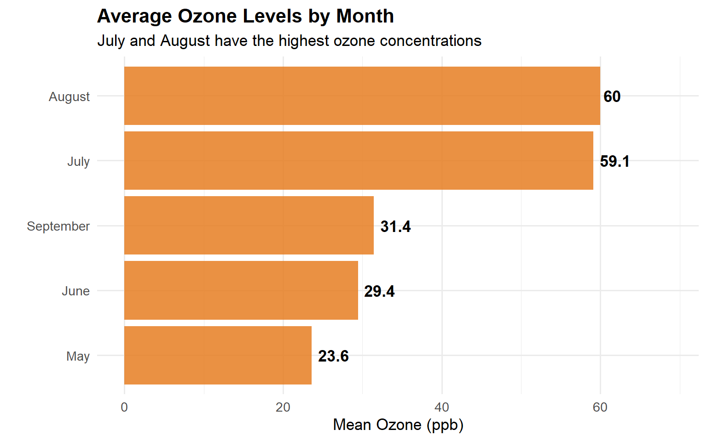

Show code
[1] "Average Day"Isabelle Garza
This page showcases R programming concepts including conditional logic, loops, custom functions, the apply family, purrr::map functions, and their application to real-world data analysis.
A function-style approach using ifelse() to apply category-based tax rates:
[1] "Condition not satisfied"
[1] "Condition not satisfied"
[1] "Condition not satisfied"
[1] "Condition not satisfied"
[1] "Condition not satisfied"
[1] 6
[1] "Condition not satisfied"
[1] 8Comparing base R’s apply/lapply/sapply functions with purrr’s map functions for functional programming.
apply()| Row-Level Statistics Using apply() | ||||
| x | y | z | mean | sum |
|---|---|---|---|---|
| 1 | 5 | 10 | 5.333333 | 21.33333 |
| 2 | 6 | 11 | 6.333333 | 25.33333 |
| 3 | 7 | 12 | 7.333333 | 29.33333 |
| 4 | 8 | 13 | 8.333333 | 33.33333 |
lapply result:[[1]]
[1] 3.464102
[[2]]
[1] 4.242641
[[3]]
[1] 2.44949
map result:[[1]]
[1] 3.464102
[[2]]
[1] 4.242641
[[3]]
[1] 2.44949Key difference:
lapply()always outputs a list, whilesapply()tries to simplify. Inpurrr,map()returns a list, whilemap_dbl()returns a typed numeric vector — making results easier to work with downstream.
Using custom functions and lapply() to automate chart generation across multiple years of data.
plot_ratio <- function(year_input) {
student_ratio %>%
filter(year == year_input) %>%
top_n(10, student_ratio) %>%
ggplot(aes(x = reorder(country, student_ratio), y = student_ratio)) +
geom_col(fill = "#3498db", alpha = 0.85) +
coord_flip() +
labs(
title = "Top 10 Countries by Student-Teacher Ratio",
subtitle = paste("Year:", year_input),
x = "", y = "Student-Teacher Ratio"
) +
theme_minimal(base_size = 12) +
theme(plot.title = element_text(face = "bold"))
}Using nested data frames and map_dbl() to calculate average ozone by month — a functional programming pattern that avoids repetitive code.
calc_mean <- function(data) {
mean(data$Ozone, na.rm = TRUE)
}
ozone_by_month <- function(df) {
df %>%
group_by(Month) %>%
nest() %>%
mutate(mean_ozone = map_dbl(data, calc_mean)) %>%
select(Month, mean_ozone) %>%
arrange(Month)
}
result <- ozone_by_month(airquality)
result %>%
mutate(Month = recode(Month,
`5` = "May", `6` = "June", `7` = "July",
`8` = "August", `9` = "September"
)) %>%
gt() %>%
tab_header(
title = "Average Ozone by Month",
subtitle = "Computed using nested data frames and map_dbl()"
) %>%
cols_label(Month = "Month", mean_ozone = "Mean Ozone (ppb)") %>%
fmt_number(columns = mean_ozone, decimals = 1)| Average Ozone by Month |
| Computed using nested data frames and map_dbl() |
| Mean Ozone (ppb) |
|---|
| May |
| 23.6 |
| June |
| 29.4 |
| July |
| 59.1 |
| August |
| 60.0 |
| September |
| 31.4 |
result %>%
mutate(Month_name = recode(Month,
`5` = "May", `6` = "June", `7` = "July",
`8` = "August", `9` = "September"
)) %>%
ggplot(aes(x = fct_reorder(Month_name, mean_ozone), y = mean_ozone)) +
geom_col(fill = "#e67e22", alpha = 0.85) +
geom_text(aes(label = round(mean_ozone, 1)), hjust = -0.2, fontface = "bold") +
coord_flip() +
labs(
title = "Average Ozone Levels by Month",
subtitle = "July and August have the highest ozone concentrations",
x = "", y = "Mean Ozone (ppb)"
) +
theme_minimal(base_size = 13) +
theme(plot.title = element_text(face = "bold")) +
expand_limits(y = max(result$mean_ozone) * 1.15)
Key takeaway: Functional programming in R — using nested data, custom functions, and map() — eliminates repetitive code and makes analyses reproducible and scalable.